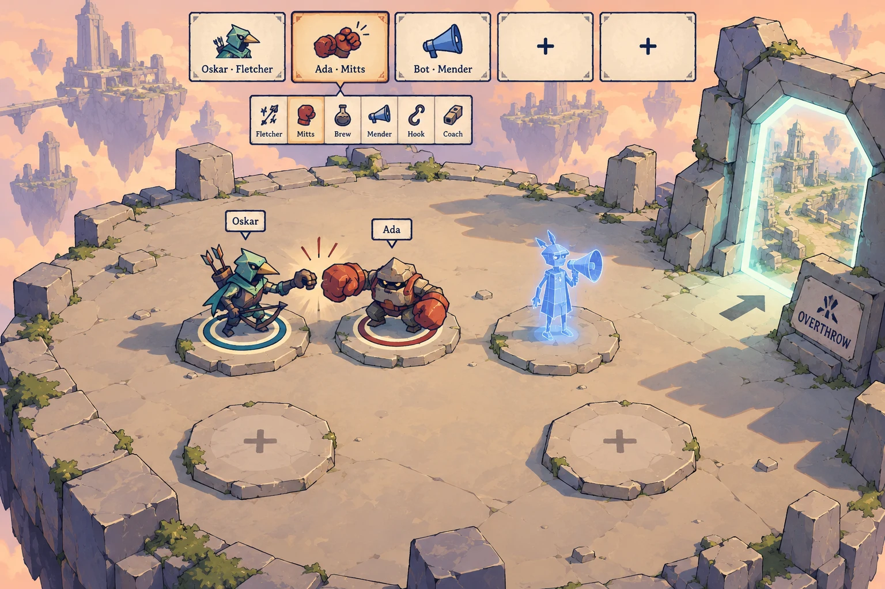
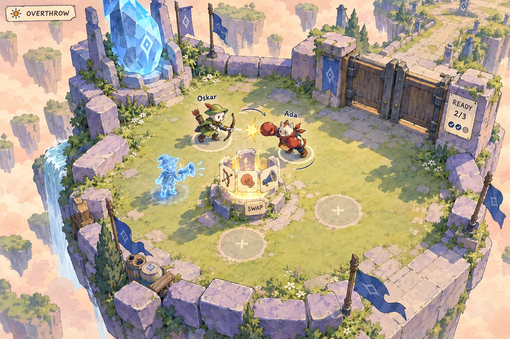
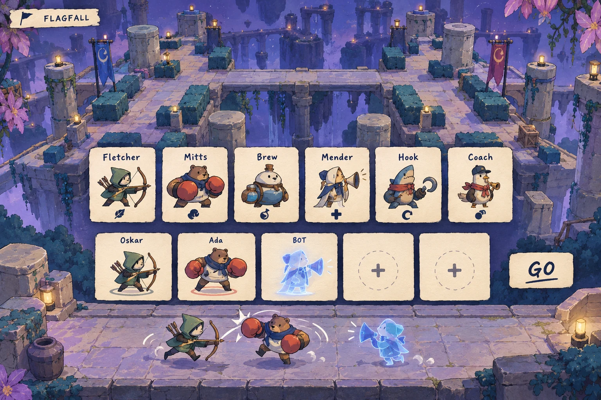
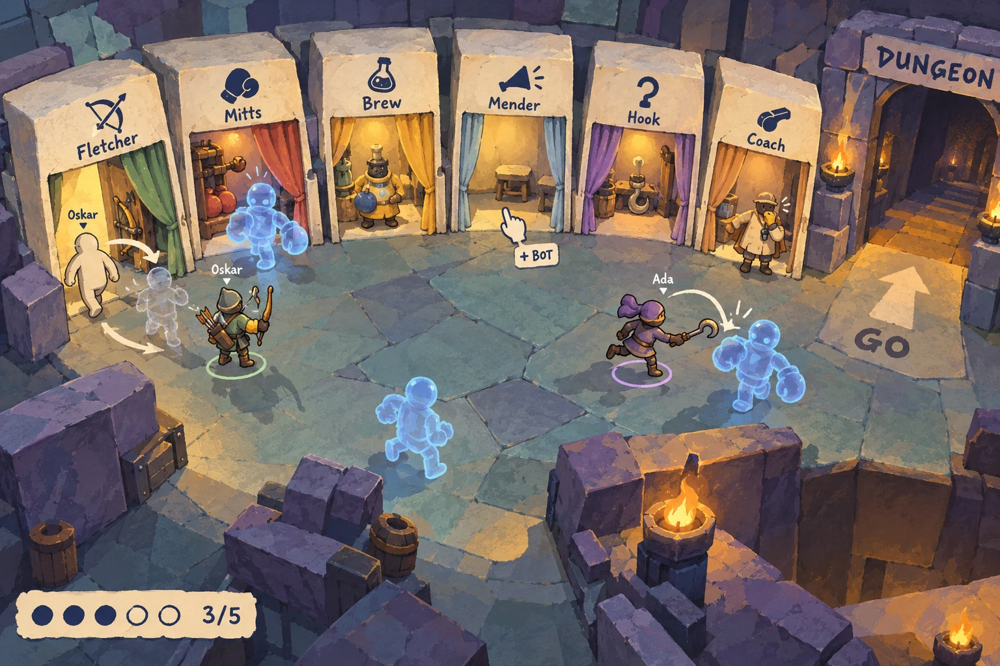
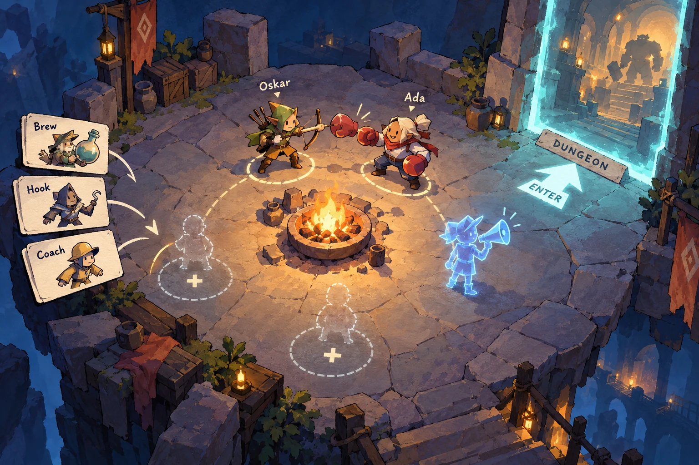
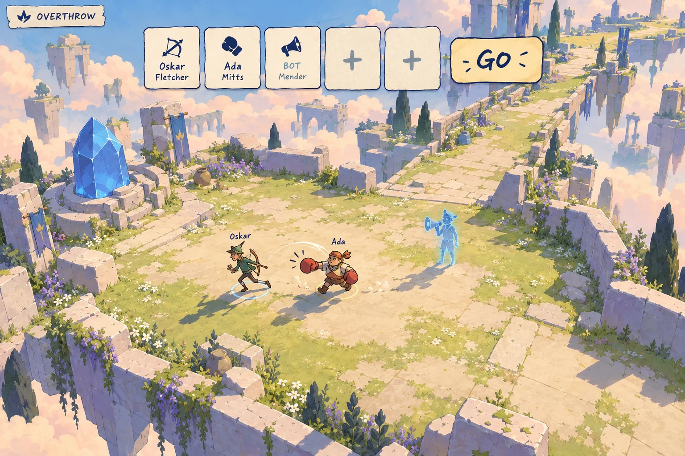

One lobby, five ways
The map is already chosen. Assemble a party of 1–5, play while you wait, then head in.
6. Merge: seats on top, plates on the floor

Bonk while you wait, then walk through the lit portal into Overthrow.
1. Base is the lobby

Five spawn spots assemble the party, then the closed gate opens when everyone is ready.
2. Draft over the map

Along the very bottom, the party’s little heroes run around and bonk.
3. Hero booths

Keep playing in the base, then walk through the gate into Dungeon.
4. Campfire circle

The portal shows Dungeon and lights up as soon as one spot is filled.
5. Plain menu over live floor

Under the menu, the party runs around and bonks while everyone gets ready.